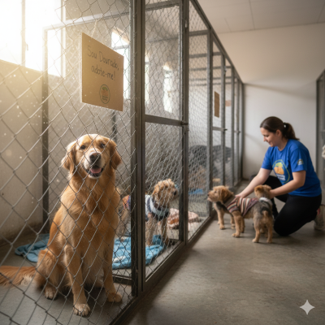

Programa de Adoção
üêæ Ajude-nos a encontrar lares: 15 animais foram adotados este m√™s!

Nosso programa conecta animais resgatados a famílias amorosas. Participe e adote um amigo! Garantimos acompanhamento veterinário inicial e castração.
Ver Animais para AdoçãoVoluntariado
Venha fazer parte da nossa equipe! Seu tempo pode transformar vidas. Temos vagas para passeadores, cuidadores e suporte em eventos.
Inscreva-se AgoraVagas disponíveis: URGENTE
Como Doar
Você pode contribuir com ração, medicamentos, ou doações financeiras para custear tratamentos. Cada centavo ajuda a salvar uma vida!
Doação por Pix:
Chave: 123.456.789-00 (CNPJ)